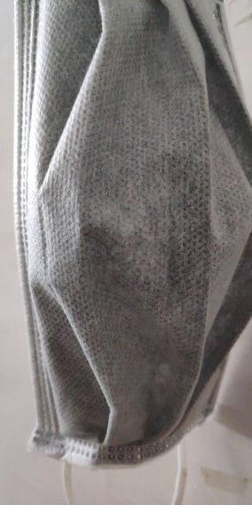
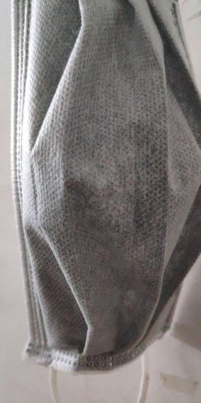

开工了，可我没口罩
原文链接 备份链接 以下文章来源于AI财经社 ，作者AI财经社作者 开工前最忧伤的段子可能是，“今天戴着口罩去买口罩，口罩没买到，还损失了一个口罩。” 2月10日起，部分企业陆续复工，宅在家里即为国家做贡献的使命宣告终结。当下的主要矛 …

上游产业链供应受阻、市场需求不足、现金流日益“吃紧”、防疫能力较弱、召回员工风险高等问题，使得中小微企业复工之路，显得困难重重。
记者 | 王晓珊 实习生 | 丁宁 编辑 | 盛倩玉
茅台镇一家酒企老板李磊，这几天愁坏了。
酒厂酿酒的酒糟有时限要求，不能放得太久，如果生产跟不上，库房里积压的货卖不出去，就会影响给供应商的周期付款。
李磊的纠结在于，“既怕开工出现感染风险，又怕不开工耽误生产。” 和李磊一样发愁复工的中小企业主不在少数，工业和信息化部副部长张克俭在2月27日召开的发布会上表示，中小企业2月26日复工率为32.8%。
如果按照工信部对220万使用云平台的中小企业监测的数据来计算，目前，还有至少147万的老板处于两难之间——不复工、还是复工？
张克俭表示，截至2018年末，中国中小企业法人单位共1807万家。若按此数量计算，实际上没有复工的企业只会更多。
上游产业链供应受阻、市场需求不足、现金流日益“吃紧”、防疫能力较弱、召回员工风险高等问题，使得中小微企业复工之路，显得困难重重。
稀缺的口罩
“从初三复工至今，厂里一共只发了三个口罩。”
于清是广西壮族自治区崇左市龙州南华糖业有限责任公司一名工人。冬季正是糖厂的榨季，每年的十一月到次年的三月，工厂都会集中榨糖。今年于清也不例外，从1月27日复工至今，工厂里的车间一直没停过。
“每个班8小时，三班倒，中午就在厂子里吃饭。”据于清介绍， 为了不影响生产，工厂里几百个人从初三就开始复工，但由于防疫物资紧缺，口罩半个月发一次， 一次发一只。
到目前，工厂发的三只口罩包括一只棉质口罩、一只活性炭口罩，一只蓝色口罩。于清对记者说，刚发的蓝色口罩他折叠好了放在兜里，一直没舍得戴。
 
 
图为龙州南华糖业有限责任公司给工人发放的口罩
复工进行时，防疫物品必不可少，但是物资考验着急于复工的企业们。
根据2019年11月公布的第四次全国经济普查数据显示，2018年末，全国法人单位和个体经营户合计从业人员为5.33亿人，其中第二产业2亿人，第三产业3.3亿人。这意味着，如果每人每天一只口罩计算，每天至少需要5.3亿只口罩。
华创证券首席分析师张瑜称，如果在极端情况下，即仅第二产业、医疗工作人员和交通运输业复工，每天也需要2.38亿只。
为应对防疫物资的巨大缺口，不少车企纷纷改建生产线，转产医疗物资。2月6日，上汽通用五菱宣布联合供应商改建14条口罩生产线，4条为N95口罩生产线，剩余为一般医用防护口罩生产线，日产量预计能达到170万个以上；2月7日，比亚迪精密制造有限公司进行了企业经营范围变更，新增了医疗器械、工业防护用品的研发、生产、销售，进行消毒液和口罩的研发与生产；2月11日，广汽集团第一台口罩生产设备已开始进行安装和调试……
尽管不断有新产能投产，众多大型国企、民企开始加入口罩生产线，国内口罩销售仍十分紧俏。2月27日，据国家发展改革委介绍，目前全国口罩日产能达到7285万只，日产量达到7619万只，分别是2月1日的3.4倍、7.8倍，全国口罩的产能利用率已达到105%左右，但这一数字与每天5.3亿口罩的需求量相对比，仍有相当大的差距。
许多中小企业既没有能力自己改建口罩生产线，也无力承受购买防疫物资所带来的高额成本，复工在即，如何在防疫物资紧缺的情况下确保员工安全开工，成为了令中小企业主头疼的难题。
工信部产业政策与法规司二级巡视员舒朝晖表示，中小企业特别是一些小微企业，生产和办公条件、人员、资金都比较弱，受到疫情影响也比较深，是复工复产的难点，也是重点，并且企业规模越小，复工率越低。
北京大学汇丰商学院教授欧阳良宜2月23日至24日发布的一项企业问卷调查研究也证明了这一观点。在533家样本企业中，68%的小微企业（企业年收入在500万以下）人员返城比例仅为25%，而年收入达5亿以上的样本企业中，31%的企业复工率已达到75%。

“望而兴叹”的免租名单
“租金是成本中的大头。”内蒙古自治区包头市浩克健身游泳健身店店长刘炳辉对记者解释道，健身房、游泳池等占地面积大，租金相对较高。自1月23日店面关门以来，门店颗粒无收，但房租却一分不少。
为帮助企业共同应对疫情，部分地产公司带头减免租金。1月28日晚间，万达集团宣布为抗击疫情，万达商管集团将对全国各地所有万达广场的商户，自1月24日-2月25日时间内的租金及物业费实行全免政策。随即，大悦城、华润置地等多家商业地产公司均相继宣布对旗下商业项目减免租金。
各地政府也纷纷出台免租政策，帮助部分当地企业解燃眉之急。
2月8日，深圳市出台应对新型冠状病毒感染的肺炎疫情的“惠企16条”，对租用市、区政府以及市属、区属国有企业持有物业（含厂房、创新型产业用房、写字楼、农批市场、商铺、仓储物流设施、配套服务用房等）的非国有企业、科研机构、医疗机构和个体工商户，免除2个月租金。2月9日，湖北省人民政府网站发布《湖北省人民政府办公厅关于印发应对新型冠状病毒肺炎疫情 支持中小微企业共渡难关有关政策措施的通知》，对承租国有资产类经营用房的中小微企业，3个月房租免收、6个月房租减半……
然而，记者在采访时了解到，由于中小企业涉及行业种类较多，且承租房屋业主并非国有企业持有物业，有相当一部分中小企业租赁运营商并不在减免租金的名单之列，只能徘徊在帮扶政策之外。
“太难了！”深圳市荔枝公寓相关负责人蔡琳告诉记者，长租公寓的业主多数属于非国有企业、个人以及股份合作公司等，政府没有补贴，只能靠业主自愿免租。
蔡琳形容自己就像“夹心饼干”一样，“一边是湖北籍住户希望长租公寓为他们免租，另一边的业主也等着租金这笔收入，我们只能夹在中间做工作。” 据蔡琳介绍，由于深圳外来人口比较多，公寓大部分租户基本都在春节前退租了。受疫情影响，荔枝公寓2月份的营业收入减少了近30%，但除了租金之外的成本却翻了一倍。
“为了给住户消毒、发放口罩等，我们支出了近20万的防疫成本，此外，春节期间给员工发放的是三倍工资，都是净支出，对公司打击太大了。”蔡琳无奈地表示，目前公司已经裁员近20%。
贵州省仁怀市茅台镇的酒企最近也在陆续复工，当被询问到是否收到当地的减免租金政策，李磊表示：“政府虽然发布了倡议书，提倡企业业主适当减免租金，但最终说了算的是业主，目前我们并没有收到任何相关的租金减免优惠。”
“如果站在出租方的角度思考，他们也在亏损。”广东省一家人脸识别企业的负责人陈豪认为，如果为了响应号召，企业业主减免幅度会非常小。“可能也就象征性地减免十几天，这对于中小企业而言只是聊胜于无罢了。”陈豪说。
广东省公寓协会深圳分会的相关人员在接受记者采访时提到，能够租到国有企业物业的企业体量都相对较大，本身抗风险能力较高，反而是在深圳市“恵企16条”之外的许多中小企业受疫情打击大、更需要补贴或减免租金的政策支持。
供应链上游受阻
不少企业已于近日陆续开工，但人手缺乏问题刚得到缓解，又走入原材料缺乏的困境。
湖南省株洲市某生物科技公司本在一周前已经复工，但由于上游原材料供应不足，所需苹果果汁粉库存几乎见底，如今又将面临着停工的风险。
在北大汇丰商学院教授欧阳良宜24日的企业问卷调查中，51.6%的样本企业认为上游产业链供应能力尚未恢复，是影响企业复工的最主要因素。

欧阳良宜认为，中小微制造企业的员工雇佣关系并不如大型企业那样稳定，往往春节之后需要重新招工。本次疫情中，中小微制造企业将面临人手短缺和原材料不足的双重考验。
“我们代理的一些产品，因为上游缺原材料生产不了，现在也只能停售了。”前述人脸识别企业股东陈豪说道。
陈豪公司目前主要进行代理销售，目前上游原材料短缺的影响仍未对公司造成较大的影响，但他担心如果情况没有及时改变，未来原材料“物以稀为贵”，价格上扬，导致产品价格上升，会对公司销售造成进一步的打击。
“因为公司要拿到成品才能销售，如果上游因缺乏材料无法生产出成品，会直接影响到公司的销售渠道。”陈豪对此解释道。
被滞后的“软需求”
“惨。”这是上海某墙纸生产厂商负责人描述该企业经营现状时，使用最频繁的一个字。
“现在也没人装修，我们就算复工了，生产线也不敢全开，这一个月损失了近2000万。” 该负责人表示，由于目前市场需求不足，产品滞销，拥有2000多名员工的公司已经开始裁员。
有企业通过裁员应对，有企业则选择停薪留职获得喘息空间。 “我们店全体19名员工都停薪留职了，去年12月的工资还都欠着。”
王杰是广西壮族自治区南宁市一家健身房门店的店长。去年六月，王杰刚刚从家乡内蒙古自治区来到广西壮族自治区南宁市，踌躇满志的他正准备在新接手的店面“施展身手”。然而让王杰也没想到的是，一场突然起来的新型冠状病毒感染的肺炎，让刚刚达到收支平衡的店面再度陷入亏损。

健身房的暂停营业通知
健身房属于人员密集场所，但受疫情影响，王杰所在公司的几百家门店已全部关停近一个月。“本来指望在今年的寒假、春节冲冲业绩，现在压根没有收入，房租、水电、泳池消毒等成本每天都在支出，说多了都是泪，不知道什么时候是个头。”王杰说。
在王杰看来，虽然目前各地复工正在有序进行，但他所在的健身行业属于“软需求”，复工的次序非常靠后。
根据广西壮族自治区南宁市发布的《南宁市服务业企业疫情防控期间安全有序复工工作导则》，2月10日起，宾馆、餐饮企业、商贸流通企业、批发市场可以复工；2月15日起，为企业生产提供融资、科技咨询、企业管理的企业可以复工；2月20日起，房地产开发企业、房屋网上销售、中介销售等房地产服务企业可以复工。
然而，体育及健身机构作为“暂缓复工的服务业企业”，仍未有明确的复工时间表。
同属于“软需求”的人脸识别行业前景陈豪表示并不看好。他认为人脸识别并不是人们当前最需要的服务产品，类似测温等防疫物资才是主流，“大家收入都受到冲击的情况下，可能下半年很多人在人脸识别这块的投入会减少，即使以前有购买意愿的，现在因为钱包‘受伤’，也会尽可能减少支出。”
陈豪原本估计今年公司销售额能做到2000万，但是因上半年无法开展正常的销售活动，最终销售额会锐减到800万左右。
收入断流，成本却在增加，企业的现金流遭遇巨大的考验。 “现在我们还撑得住，但疫情再持续两个月，我们现金流就会非常紧张。”陈豪对记者说道，原本公司打算过完年就开始招聘新员工，但现在受疫情影响，未来不排除会裁员节流。
“这次疫情对企业的考验和对人身体素质的考验一样”，王杰给记者打了一个形象比方， “经营不善的公司就像是有基础病的老年人，在严峻形势的考验下，会很快的被击垮，但现金流较好、实力较强的公司，则会在这波冲击之后留下来，更快地发展。”
健身房门店店长刘炳辉对行业未来的发展则较为乐观，他决定等店面重新开张时，以此次疫情中身体素质较好的人不容易受病毒侵扰为宣传点，努力弥补今年前三个月20%的营业损失。
“人到30了像是在一个十字路口，总感觉有股莫名的焦虑。”失眠多日的王杰最近几天重新投递了简历，准备离开苦心经营半年的门店，重新出发。
（应受访者要求，于清、王杰、陈豪、蔡琳、李磊均为化名）
来源｜南都周刊
END
欢迎分享到朋友圈，如想取得授权请邮件：newmedia@nbweekly.com。如果想找到小南，可以在后台回复「小南」试试看哦~

原文链接 备份链接 以下文章来源于AI财经社 ，作者AI财经社作者 开工前最忧伤的段子可能是，“今天戴着口罩去买口罩，口罩没买到，还损失了一个口罩。” 2月10日起，部分企业陆续复工，宅在家里即为国家做贡献的使命宣告终结。当下的主要矛 …
原文链接 备份链接 _ 2月10日这个周一，中国多个省市迎来了春节后第一个工作日，虽然比原定假期已推迟一周，但政府、企业和个人所面临的疫情防控压力都不小。当前，湖北省仍需要着力抓好疫情防控，其他地区也需要做好防控的同时有序恢复生产 _ …
原文链接 备份链接 参与中国欧盟商会与中国德国商会调研的577家企业中，大约一半预计2020年上半年营收会下跌超过10%，四分之一预计营收下滑超过20%。有46%的企业预计2020年的经营业绩将不及预期， …
原文链接 备份链接 图片来源：视觉中国 记者：柯晓斌 编辑：文姝琪 “ 随着疫情缓解，口罩价格开始回落。 ” 随着复工潮来临，“买不到口罩”还是上班族的难题。 在天猫、京东、苏宁等电商平台上，消费者仍能在手速快或运气好的情况下，抢到几个由 …
原文链接 备份链接 防疫压力层层传导，但各区域、 部门之间缺乏互通互认的信息共享机制超长春节假期终于结束，上班族等来了复工通知。 数据显示，2月14日至2月22日，全国累计发送旅客1.17亿人次，每日客流量均实现环比增长。但在返程速度逐渐 …